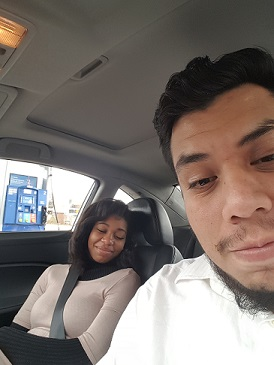

"All You Do"

"I often find it hard to show you
how much you mean to me,
its not cause of lack of trying.
But rather beacuse it grows
every single day.
Todo lo que medas tu,
todo lo que eres tu,
le dan sentido a mi vida
I love you so much"
(I wish I was as good as you)
"Dream"
"I missed you today. Between waking and sleeping, I thought of you.
We met somewhere inside an insomniac's dream, in a world so precarious- it could crumble at any given time- folding at the slightest touch.
I wish I could have a day with you, where the sun never went past noon. Or a night, where the stars could go on forming their constellations; until the sky is filled with stories of how I loved you.
But, of course, that can no longer be so."
"Kiss"
Without meaning to
he disarmed me
with kisses that soothe
and alarm me
In arms that terrify
and calm me
"Yours and Mine"
"You were you;
And I was I;
We were two
before our time
I was yours,
before I knew
and you have always
been mine too.
"Souls"
When two souls fall in love, there is nothing else but the yearning to be close to the other. The presence that is felt through a hand held, a voice heard, or a smile seen.
Souls do not have calendars or clocks, nor do they understand the notion of time or distance. They only know it feels right to be with one another.
This is the reason why you miss someone so much when they are not there— even if they are only in the very next room. Your soul only feels their absence— it doesn’t realize the separation is temporary.”
"Kiss"

I love you, I do –
you have my word.
You have all my words.